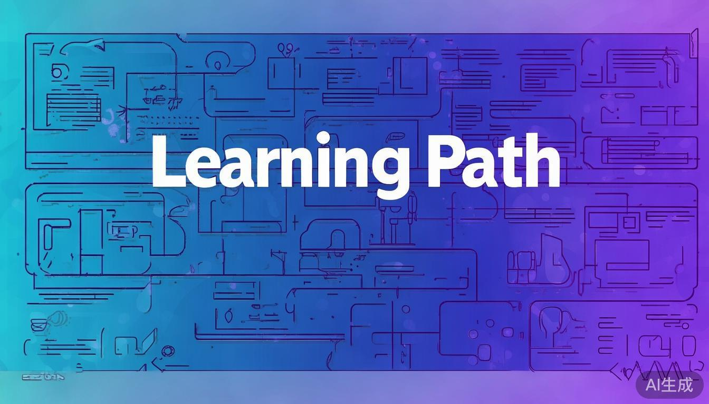

白驹 ccowork · 科学实验室
工科实训实验室（Lab）
真能跑、真能下载、真能实践的工程学习区。每个脚本都可用
python 文件名.py直接运行。
一、能直接跑的代码
| 文件 | 干什么 | 运行方式 |
|---|---|---|
simulation/01_pid_controller.py |
PID 控制仿真（P/PI/PID 对比） | python 01_pid_controller.py |
simulation/02_spring_mass_damper.py |
弹簧-质量-阻尼二阶系统 | python 02_spring_mass_damper.py |
simulation/03_projectile.py |
抛体运动（含空气阻力） | python 03_projectile.py |
simulation/04_rc_circuit.py |
RC 电路暂态（时间常数） | python 04_rc_circuit.py |
simulation/05_monte_carlo.py |
蒙特卡洛（π + 积分） | python 05_monte_carlo.py |
simulation/06_single_pendulum.py |
单摆（非线性大角度） | python 06_single_pendulum.py |
simulation/07_dc_motor.py |
直流电机电气+机械耦合 | python 07_dc_motor.py |
simulation/08_heat_equation.py |
一维热传导显式差分 | python 08_heat_equation.py |
simulation/09_lotka_volterra.py |
捕食者-猎物生态振荡 | python 09_lotka_volterra.py |
simulation/10_wave_equation.py |
一维波动方程差分 | python 10_wave_equation.py |
simulation/test_simulation.py |
仿真测试（pytest） | pytest test_simulation.py -v |
脚本逐行讲解：见
simulation/仿真脚本图文讲解.md—— 10 个脚本的原理图、代码精讲、参数表、真实输出与避坑点。 工业级工具上手：见simulation/开源仿真工具-一键安装与第一个案例.md—— FreeCAD/KiCad/Gazebo/LTspice/OpenFOAM 的一键安装 + 进阶案例。 |cnc/01_方形轮廓.nc02_圆形轮廓.nc03_钻孔循环.nc| 真实 G 代码 | 用 CNCjs / UGS 加载 | |programming/01_python_basics.py| Python 基础全示例 |python 01_python_basics.py|
二、学习路线

- 编程：见
programming/编程与计算机学习路线.md - 数控编程：见
cnc/数控编程与开源工具.md - 仿真模拟：见
simulation/仿真模拟与开源工具.md - 工科实训项目：见
工科实训项目.md
三、开源工具（开箱即用，附下载）
- 数控：CNCjs、Universal Gcode Sender、GRBL、LinuxCNC
- 仿真：ngspice、Octave/Scilab、OpenModelica、Gazebo、KiCad
- 编程：Python、VS Code、Arduino
环境要求：Python 3（官网 python.org 免费下载）。仿真脚本纯标准库，零依赖即可运行。